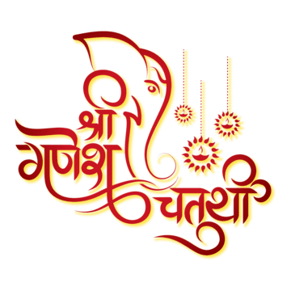

Ganesh Chaturti

Ganesh Chaturthi, also known as
Vinayaka Chaturthi or Vinayaka Chavithi
or Vinayagar Chaturthi, is a Hindu festival birthday of Hindu
deity Ganesha. The festival is marked with
the installation of Ganesha's clay murtis privately
in homes and publicly on elaborate pandals.
Most Famous Ganpatis
- Mumbai
- Khetwadicha Ganraj
- Lalbaugcha Raja
- GSP Seva Mandal
- Ganesh Galli Mumbai's King
- Andhericha Raja
- Pune
- Kasp Ganpati
- Jogeshwari
- Guruji Talim Mandal
- Tulshi Bag
- Keseriwada